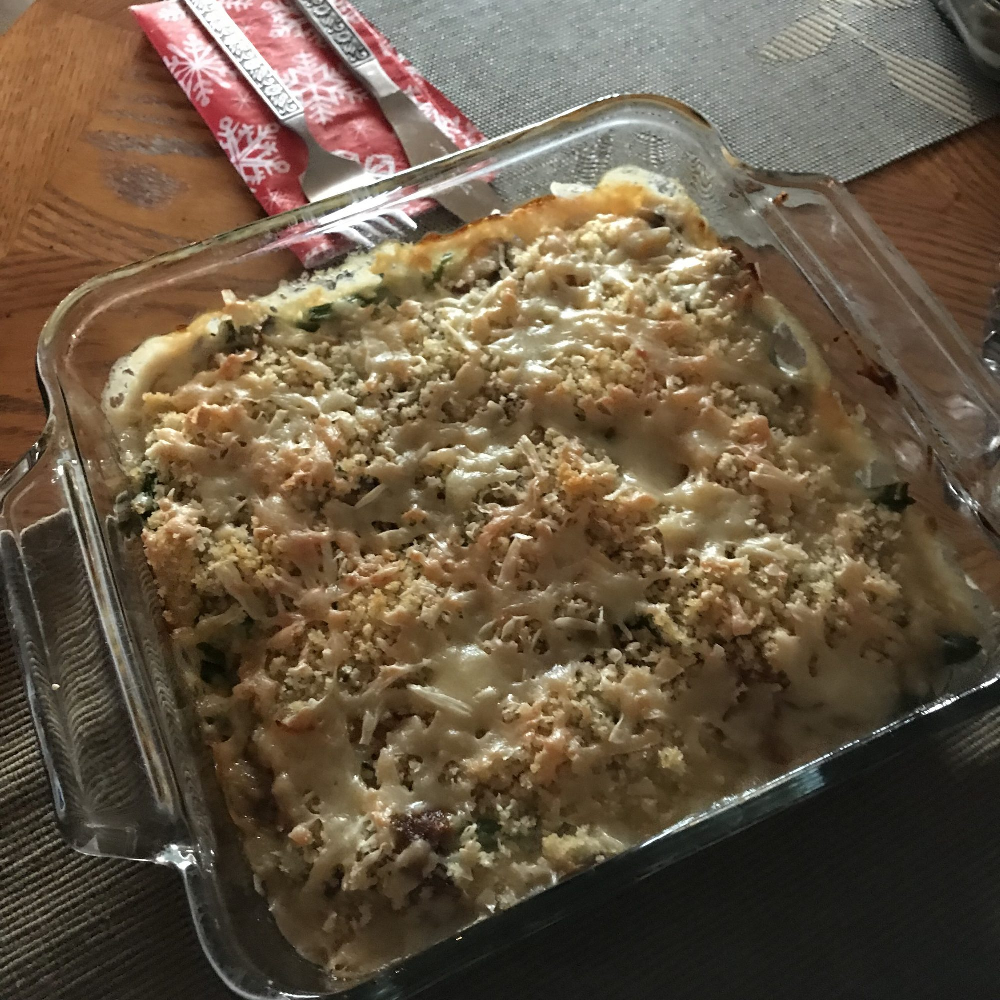

Onion Green Bean Casserole

Description
The iconic green bean casserole is reworked with the flavors of French onion soup -- caramelized onions and Gruyere cheese.
Ingredients
For the onions:
- 2 tablespoons butter
- 2 large yellow onions, thinly sliced lengthwise
- salt and ground black pepper to taste
- 1 tablespoon sherry vinegar
For the white sauce:
- 2 tablespoons butter
- 2 and 1/2 tablespoons all-purpose flour
- 2 and 1/2 cups milk
- 1 pinch ground nutmeg
- 1 pinch cayenne pepper to taste
- 1/4 teaspoon ground thyme
For the toppings:
- 2 tablespoons melted butter
- 2/3 cup panko bread crumbs
- 2 pounds fresh green beans, trimmed
- 4 ounces shredded Gruyere cheese, divided
- 1/3 cup grated Parmesan cheese
Steps
- Preheat oven to 375 degrees F (190 degrees C). Grease a 9x13 inch casserole dish.
- Heat 2 tablespoons of butter in a large skillet over medium heat. Stir the onions into the pan; cook and stir until very soft and golden brown, about 15 minutes. Stir in sherry vinegar. Transfer to a small bowl, and reserve.
- In the same skillet, melt 2 more tablespoons butter. Whisk in 2 tablespoons flour. Stirring constantly, cook over medium heat until the flour smells like baked pie crust, about 3 minutes. Slowly whisk in milk, about 1/2 cup at a time, then whisk in nutmeg, cayenne pepper, and thyme. Bring to simmer, and cook until thickened, whisking constantly, 3 more minutes. Transfer to a bowl and reserve.
- Melt remaining 2 tablespoons butter in clean skillet; stir in panko until all crumbs are coated; reserve.
- Bring a large saucepan of salted water to a boil over medium heat, and boil beans until bright green and crisp but not raw tasting, 3 to 4 minutes. Drain very well.
- Spoon half of the caramelized onions into the prepared casserole dish; top with green beans. Season with salt and black pepper. Spread reserved white sauce over the green beans; sprinkle with half of the Gruyere cheese. Top with the rest of the onions, and use the back of a spoon to push onions down into sauce and cheese. Top with the buttered panko crumbs, the remaining Gruyere, and Parmesan cheese.
- Bake in the preheated oven until hot throughout and lightly browned, about 30 minutes. Let sit 10 minutes before serving.